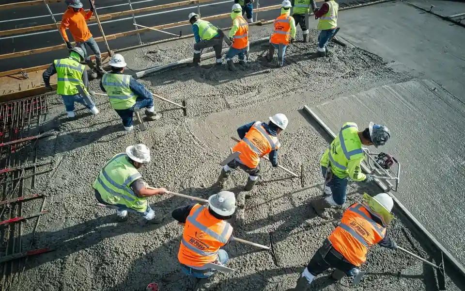

Bâtiments et construction
Construction de bâtiments, équipements collectifs, logements de fonction, hangars et locaux administratifs.

Entreprise guinéenne créée le 03 novembre 2015
Bâtiments, ouvrages de génie civil, infrastructures sanitaires et scolaires. Treize marchés exécutés en Guinée depuis 2015.
Domaines d'intervention
Transport et construction d'ouvrages de génie civil et rural, ouvrages de franchissement, projets d'aménagements, construction de bâtiments, rénovations, équipement d'infrastructures sanitaires et scolaires, fournitures diverses.
Construction de bâtiments, équipements collectifs, logements de fonction, hangars et locaux administratifs.
Ouvrages de génie civil et rural, ouvrages de franchissement et interventions sur infrastructures utiles aux territoires.
Construction, rénovation et équipement d'infrastructures de santé et d'établissements scolaires.
Rénovation en peinture, entretiens, réparations matérielles et mobilières sur bâtiments existants.
Fourniture d'équipements et installations selon les besoins exprimés par le donneur d'ordre.
Transport de travailleurs et soutien logistique aux activités de terrain.
Projets d'aménagements, infrastructures d'irrigation et équipements liés aux activités agropastorales.
Références
Construction d'une école primaire de 3 salles de classe, bureau et magasin incorporé, avec 2 blocs de latrines de 4 cabines, en qualité de sous-traitante.
Réhabilitation des infrastructures d'irrigation de N'douta sur 50 ha, construction d'un magasin et de deux aires de battage et séchage, en qualité de sous-traitante.
Construction d'ouvrages en béton armé sur la route Kindia-Télimélé, en qualité de sous-traitante.
Rénovation en peinture et entretiens de 3 bâtiments R+3, 2 bâtiments R+1 et une villa de 13 chambres avec latrine.
Transport des travailleurs d'Eco-bétape S.A vers le site d'exploitation de la Société des Mines de Mandiana.
Construction et équipement d'une école primaire avec 3 salles de classe, bureau, magasin, latrines, logement du directeur, cuisine externe, forage et clôture semi-grillagée de 400 ml, en qualité de sous-traitante.
Repères
À notre actif nous comptons plusieurs marchés déjà réalisés au sein des ministères, projets et programmes de la place en Guinée.
Conformité administrative
Partenaires et donneurs d'ordre
ECCOTA-EPF travaille avec des acteurs publics, privés et institutionnels selon les exigences propres à chaque mission.
Zone d'intervention
Les références transmises couvrent Conakry, Coyah, Kankan, Mandiana, Beyla, Tougué, Kindia et Télimélé.
Premier contact
Échangez directement avec ECCOTA-EPF pour présenter votre besoin, préciser le périmètre d'intervention et organiser une première rencontre.